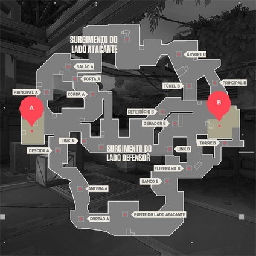

Melhor Composição:
- Breach
- Raze / jett
- Brinstone
- Killjoy
- Fade
Um local de pesquisas altamente confidencial partido ao meio por um experimento com Radianita malsucedido. Com opções tão divididas quanto o próprio mapa para os defensores, a escolha é sua: encare os atacantes na própria base deles ou prepare o terreno para um ataque iminente.